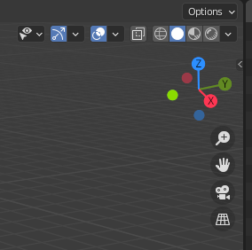
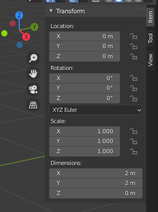
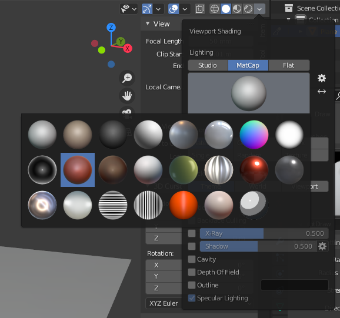
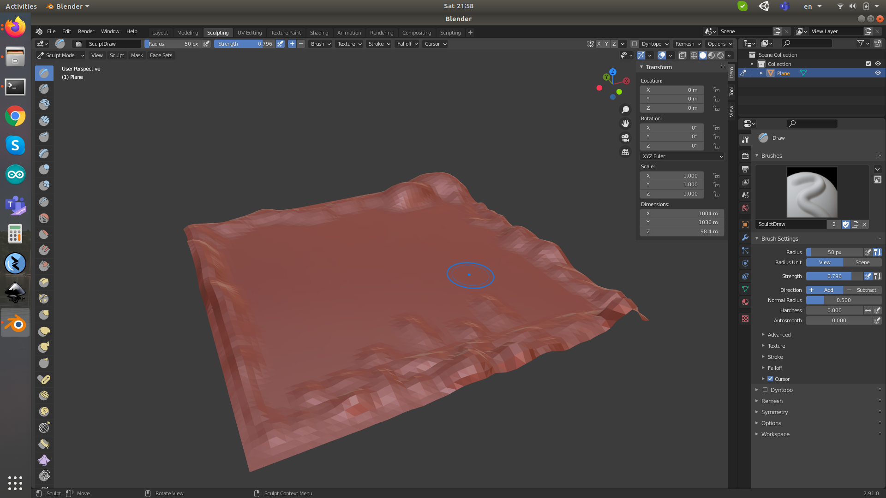

Blender Installation
- Click Show Applications in Ubuntu
- Search Blender, click it and install.
- What to expect? Once you installed and opened it, it should with a cube.
Basic Operations
- When hovering different windows, the shortcut key does different things.
- Hover around the box, press a and then x to delete.
- Add a new object, like a plane, press Add → Mesh → Plane.
- To adjust the size of the plane, press the very small leftarrow on the right bar, it will show vertical tabs Item Tool and View. Press Item, and see Transform, adjust with that.


- Make sure the scale is 1 by, press Object → Apply (Ctrl A) → Scale.
- Change the view. Press the compass x y z, or press the middle roller at the mouse and scroll, to rotate the view.
- Press Shift + Middle Roller + Scroll, to translate the view left right up down.
- Zoom, just scroll the middle roller at the mouse.
- Change the color of the plane.

Subdivide, Trigulation and Sculpt
- Go to Modeling, make sure Edit Mode
- Select the plane by pressing A
- Right click the plane, press Subdivide, click the window at the bottom, type 64 to Number of Cuts.
- Go to Face, click Triangulate Faces (Ctrl T).
- Back to Sculpting, use draw to start reshaping the landscape by holding left key of mouse.

- There is a mirror function. You can turn it off, by finding the butterfly symbol with XYZ. Toggle off it.
- Holding left key + Ctrl to lower the depth. Normally, without ctrl it raises up the terrain.
- Export to fbx file. Tick Apply Transform. Click Export FBX.
References
- How to Install Blender 3D on Ubuntu 18.04
- Installing Blender
- Blender 2.91 Reference Manual
- How to Move Around in Blender: Viewport Navigation.